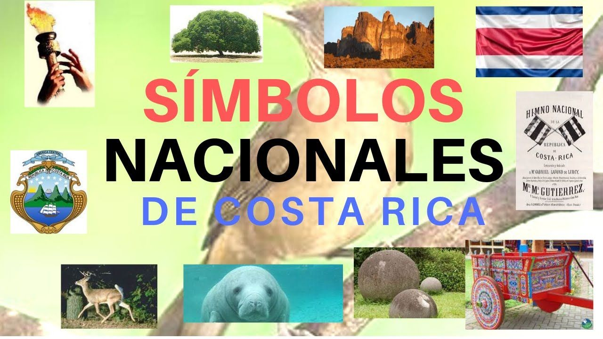

Costa Rica
Símbolos Patrios

Bandera nacional: Fue creada el 29 de septiembre de 1848 junto con el Escudo Nacional, luego de la
declaración de la República el 31 de agosto de 1848. La concepción y diseño de la actual bandera, vigente
desde ese año, correspondió a Pacífica Fernández Oreamuno, esposa del primer presidente y fundador de la
República, José María Castro Madriz. El diseño se encuentra inspirado en la bandera de Francia. La bandera
es tricolor por medio de cinco franjas colocadas horizontalmente, una roja en el centro comprendida entre
dos blancas, a cada una de las cuales sigue una azul. El ancho de cada franja es la sexta parte de la bandera,
excepto la roja que es de dos sextas. Las franjas están en una proporción 1:1:2:1:1
El Pabellón Nacional se diferencia porque en el centro de la banda roja lleva bordado sobre fondo blanco el Escudo Nacional.
Los colores representan: Azul: representa el cielo que cubre Costa Rica y los ideales por forjar una nación
democrática. Blanco: representa la pureza, la bondad y la paz. Rojo: representa la sangre derramada por los
costarricenses en la lucha hacia la libertad, el trabajo y la labor cotidiana, según está escrito en el
Himno Nacional y en el Saludo a la Bandera.
Escudo nacional: Fue decretado el 29 de septiembre de 1848. Consiste en un marco dorado que representa
el grano de oro (el café). Dentro del marco hay tres volcanes humeantes, de color verde azul, que simbolizan
a los volcanes y las tres cordilleras que cruzan el país y un extenso valle verde claro entre dos océanos
azules (océano Pacífico y mar Caribe, que bañan las costas del oeste y el este del país, respectivamente,
al igual que las de Centroamérica). En cada uno de estos hay un buque mercante representando la historia
marítima del país. En el horizonte, a la izquierda del escudo, se aprecia un sol naciente de oro viejo.
Cierran el escudo dos palmas de mirto verde oscuro unidas por una cinta con la leyenda «REPÚBLICA DE COSTA
RICA» en letras doradas. El remate lo forma una cinta azul claro que sirve de corona con la leyenda América
Central 1906, por la Ley número 18 del 27 de noviembre del mismo año, fueron suprimidos los dos primeros
elementos citados y en 1964 se le agregaron dos estrellas más las cuales todas juntas representan las siete
provincias de Costa Rica; el escudo aparece en la franja roja de la bandera de uso estatal y marítimo (sobre fondo blanco)
y en la de uso civil no aparece. Desde que este fue elegido no ha vuelto a tener cambios.
Himno nacional: La música del Himno Nacional de Costa Rica fue compuesta en 1852 por Manuel María
Gutiérrez Flores, mientras que la actual letra fue escrita por José María Zeledón Brenes en 1903. La música,
una marcha, fue interpretada por primera vez el 11 de junio de 1852 por la banda militar de Costa Rica,
dirigida por Gutiérrez, para recibir a los diplomáticos extranjeros de Estados Unidos y Reino Unido durante
el gobierno de Juan Rafael Mora Porras. La música del himno fue oficial durante más de 100 años, pero el
decreto que la oficializó no fue emitido sino hasta 1979 durante el gobierno de Rodrigo Carazo Odio.
La guaria morada, flor nacional: La orquídea morada conocida popularmente como la guaria morada
cuyo nombre cientfico es Cattleya Skineri florece en los meses de febrero y marzo.La guaria morada fue
decretada como flor nacional en el gobierno de León Cortés Castro por la Secretaría del Estado en el
Despacho de Fomento y Agricultura, por acuerdo No. 24 del 15 de junio de 1939. Posteriormente, mediante
el acuerdo ejecutivo No. 24, de noviembre de 1972, bajo la presidencia de José Figueres Ferrer, se
establece la segunda semana del mes de marzo como semana de la Orquídea Costarricense. En 1934, se
compuso una canción dedicada a esta flor, que actualmente en uno de los himnos patrios de Costa Rica.
En 1939, en Argentina se fundó un jardín botánico, llamado el Jardín de Paz y le pidieron al Estado
costarricense que enviaran su flor nacional para que luciera con las demás flores de los diferentes países.
Debido a que en ese entonces, el país no contaba con una flor denominada nacional, el Club de Jardines
y el Club Rotario hicieron un concurso para elegir a la que representaría al país de ahí en adelante.
En el concurso se valorarían características muy costarricenses, como el que fuera originaria de América
y estuviera muy incorporada y arraigada a las costumbres nacionales. La ganadora resultó ser una orquídea
conocida popularmente como guaria morada. Se le llama "guaria morada" por el color púrpura rojizo de sus
flores, semejante al de las moras. La aparición de sus flores durante el mes de marzo, además del aprecio
que le tiene el costarricense, hacen que esta flor sea utilizada para el adorno de altares durante la
cuaresma y las celebraciones de la Semana Santa.
El árbol de Guanacaste, árbol nacional: El árbol de Guanacaste fue declarado como el árbol
nacional de Costa Rica el 31 de agosto de 1959, durante el gobierno de Mario Echandi Jiménez. Fue escogido
como homenaje a los guanacastecos, por su Anexión del Partido de Nicoya al país en 1824. En estado natural,
el árbol de Guanacaste se distribuye en ambos litorales, tanto el Pacífico como el Atlántico, pero es más
común en el Pacífico, en altitudes que rondan los 0 y 1300 msnm. Se han encontrado especímenes en México,
Centroamérica, el norte de Suramérica y las Antillas. Llega a medir quince metros de alto y el diámetro
de su tronco puede ser de hasta cuatro metros. Es un árbol de tipo caducifolio. Es considerado un árbol
vivaz, por su potencia y larga vida, que va de los 60 a 70 años.
El yigüirro, ave nacional: El yigüirro fue decretado ave nacional el 3 de enero de 1977, bajo la
presidencia de Daniel Oduber Quirós, por iniciativa del poeta ramonense Eliseo Gamboa y el diputado Deseado
Barboza, quienes fueron amantes y defensores de las aves. Fue declarado como tal como un tributo a su canto
potente y melodioso que acompaña la entrada de la época lluviosa, además que fue considerado como un personaje
importante dentro del folclore, de la literatura y de la música costarricense, en poesías, cuentos y
canciones nacionales. El yigüirro es una especie de mirlo pardo que mide entre 22 y 24 cm. Tanto el macho
como la hembra poseen un plumaje pardo claro oliváceo en la parte superior, más claro en la garganta y el
abdomen. El pico es amarillento y las patas parduzcas. Se le puede encontrar en áreas rurales y urbanas,
en sitios de cultivo, cafetales, jardines, pastizales con pájaros dispersos y bosques secundarios. Se alimenta
de frutas, lombrices, caracoles, gusanos e insectos. Anida entre marzo y junio.
La carreta típica, símbolo del trabajo: La carreta fue decretada Símbolo Nacional el 22 de marzo de 1988,
mediante Decreto No. 18197-C, publicado en La Gaceta No. 131 el 11 de julio de 1988 durante la presidencia de Óscar
Arias Sánchez. Se distingue por sus diseños únicos con que son pintadas, con figuras geométricas, flores y animales.
De hecho, aunque las decoraciones tienen semejanzas evidentes, no hay dos carretas pintadas exactamente iguales, ya
que se dan cambios en los detalles y el acomodo de los dibujos. Se le considera símbolo de identidad nacional, y por
tal motivo, la carreta típica fue declarada Obra Maestra del Patrimonio Oral e Inmaterial de la Humanidad por la
Unesco el 24 de noviembre de 2005.
Historia
Día de la Independencia es una parte importante de Costa Rica Historia. El 15 de septiembre de 1821, después de la guerra
por la independencia de México, las autoridades de Guatemala declararon la independencia de todas las provincias de Centroamérica.
Hoy en día, del Día de la Independencia todavía se celebra el 15 de septiembre.Aunque técnicamente, bajo la Constitución
española de 1812, luego adoptada en 1820, Costa Rica y Nicaragua se habían convertido en una gran provincia autónoma con
León como capital. Luego, en 1838, Costa Rica se declaró soberana.
Estos eventos seguidos de una era de paz y prosperidad. Hasta 1917, cuando el General Federico Tinoco Granados gobernó
como un dictador militar durante dos años. Más tarde, en 1948, Jose Figueres inició una guerra civil en la que murieron
2.000 personas; la guerra sólo duró 44 días y fue el evento más sangriento jamás a tener lugar en Costa Rica. La junta
victorioso, sin embargo, dio lugar a una constitución que dio paso a elecciones libres por sufragio universal y la
abolición total del ejército. Figueres se convirtió en un héroe nacional cuando Costa Rica disolvió su ejército en 1949.
Desde ese día, Costa Rica ha tenido 16 elecciones presidenciales democráticas.
Organización territorial de Costa Rica
Provincias
San José, Alajuela, Cartago, Heredia, Guanacaste, Puntarenas y Limón.